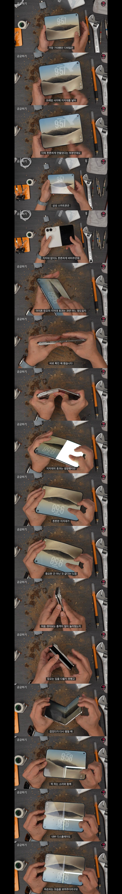

FU** 소리와 함께
손쉽게(?)재현가능

FU** 소리와 함께
손쉽게(?)재현가능
...근데 저정도로 휘면 폴드8도 멀쩡하진 않을듯? 다만 특정패턴이 반복되는걸로 보아 저부분이 유독 약하긴 한걸오 보임
폴드8 예전에 시험하던 영상있었는데 내 기억상 아이폰 듀오가 걍 내구성 약한거임.
전에 저 유튜버가 똑같이 폴드8 했던 영상 있을거임 보고와 s26울 살까 했다 폴드살까 고민하다가 s26울 샀는데 아이폰살걸 시발 ㅠ
ㄴㄴ 폴드8은 고작 저 정도로 안망가짐
폴드는 멀쩡했음
저렇게 휘고 난 다음에도 잘 닫히고 잘 열림.
폴드는 버팀 액정 힌지 모두 다. 심지어 한번이 아니고 한참을 쥐어 재꼈는데 포기
폴드는 잘버텼음
버팀.둘 비교하면 아이폰이 약한게 맞음
저 유튜버가 어딘가는 박살나겠지란 마음으로 폴드8 을 저런식으로 했는데 뒤로 안넘어감. 그래서 자존심 상했대..

아이폰듀오 화면분할이 50:50으로 밖에 안된다던놈들 나와라 ㅋㅋㅋㅋㅋ
3개로도 쪼개지잖아 보라고 ㅋㅋㅋㅋㅋㅋ
???: 싸구려같고 조잡한 과거 폴더블들^^ (실제로 한 말)
아니 통쾌 짤을 ㅋㅋㅋㅋㅋㅋㅋㅋㅋㅋㅋ
통쾌짤 한 열번은 본거같은데 볼때마다 웃김ㅋㅋㅋㅋ
근데 난 이런 폰 테스트 영상 볼때마다 생각하는게
망치로 때려부수거나 역방향으로 펼치거나 하는게 진짜 실생활에 적용되서
제품 구매하는데 고려할만한 내구성 테스트인가 싶음
애플은 걍 휴대폰으로 못질하는 새끼들 없잖아 ㅇㅇ 이정도면 됐지, 하고 만드는거 같은데
시발 아이패드는 뭔 알루미늄으로 만든줄 알았다 대학 다닐때 가방에 넣어놨는데 금갔음 미친 원가절감 새끼들
나도 저렇게 강제로 역방향으로 열어서 저렇게 파손되는건 일상생활에 사용하는데 저렇게 까지 안하니깐 상관없을거 같은데, 처음에 터치id 전원버튼으로 인식하는게 조금만 충격가서 깨지면 인식이 아예 안되는거 보니깐 그건 좀 문제 있는거 같더라...
1세대 스게 ww
짜장폰임 ?????????????????? ㅋㅋㅋㅋ 개못만드네 ㅋㅋㅋ
??: 크~ 화면 3분할 통쾌했어요
내구성 처참하네 ㄷㄷ